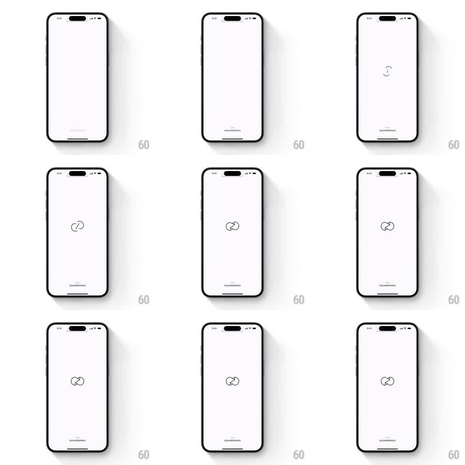

Media
Frame-by-frame

Rebuild this animation 1:1: Unfold's splash screen - on white, two thin vector arcs rotate toward each other, morph, and snap together into the interlocking Unfold logo mark, with a tiny "FROM SQUARESPACE" credit at the bottom.

Rebuild this animation 1:1: Unfold's splash screen - on white, two thin vector arcs rotate toward each other, morph, and snap together into the interlocking Unfold logo mark, with a tiny "FROM SQUARESPACE" credit at the bottom. ## Integration Integration: stack-agnostic spec - springs given as stiffness/damping, timed motions as duration + curve; map every value to your framework and animation library of choice. ## Scene Plain white screen, near-black ink. Center: the logo assembly point. Bottom center: "FROM SQUARESPACE" in small caps. ## Motion spec Pattern: logo self-assembly, ~1.5s. - Two thin-stroke arcs fade in offset from center (one rotated -90deg, one +90deg), 200ms. - Both rotate toward their final orientation over 800ms, ease-in-out, their curves subtly morphing (stroke path interpolation) as they turn. - In the last 150ms they snap into the interlocked mark with a 3% scale overshoot (spring ~500/25). - The assembled mark holds still; footer text stays static the whole time. ## Calibration - Rotation and morph run on the same clock; rotating first and morphing later reads as two separate animations stitched together. - The snap overshoot is barely visible (3%) - a bigger bounce cheapens the mark. ## Reduced motion Arcs crossfade directly into the assembled logo (300ms); no rotation. ## Don't miss - The two arcs share one stroke weight and color throughout; do not tint them differently to "show the parts". - Nothing else on screen moves - no background shimmer, no footer fade.